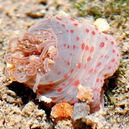
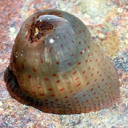

Pink-spotted
bead anemone
Anthopleura buddemeieri
Family Actiniidae
updated
Jul 2024
Where
seen? These small anemones are seen near the high water
mark on rocky shores made up of smooth boulders and rocks below a
thick coastal forest. Individually usually widely dispersed, seldom
with many on the same stone. First seen on St. John's Island, subsequently
found on other southern natural rocky shores.
Features: Diameter with tentacles
expanded 1-2cm. Pale body column with pink spots in rows along the
length of the body. One ring of tapering tentacles, pale greyish with
pinkish cast and pinkish tips.
When exposed to air at low tide, it tucks its tentacles into its body
column so it looks like a pink bead of jelly with tiny red spots. It looks
quite different from other bead anemones (Anthopleura sp.)
What does it eat? A study suggests they feed on isopods and amphipods.
Status and threats: As at 2024, they are listed as 'Endangered' in Singapore.
|

St. John's Island, Oct 11 |
|

Lazarus Island, Apr 12
Photo shared by Loh Kok Sheng on his
blog. |
| Pink-spotted
bead anemones on Singapore shores |
| Other sightings on Singapore shores |

St John's Island, Feb 24
Photo shared by Loh Kok Sheng on facebook. |
|
|
|
References
- Checklist of Cnidaria (non-Sclerectinia) Species with their Category of Threat Status for Singapore by Yap Wei Liang Nicholas, Oh Ren Min, Iffah Iesa in G.W.H. Davidson, J.W.M. Gan, D. Huang, W.S. Hwang, S.K.Y. Lum, D.C.J. Yeo, May 2024. The Singapore Red Data Book: Threatened plants and animals of Singapore. 3rd edition. National Parks Board. 663 pp.
- Daphne Gail Fautin, S. H. Tan and Ria Tan. Dec 2009. Sea anemones
(Cnidaria: Actiniaria) of Singapore: abundant and well-known shallow-water
species. The Raffles Bulletin of Zoology. Pp. 121-143.
- Nguyen T.K.D., Chou L.M., Tan K.S. Distribution and Feeding Behaviour of a High Intertidal Sea Anemone, Anthopleura buddemeieri, in Singapore.
|
|
|